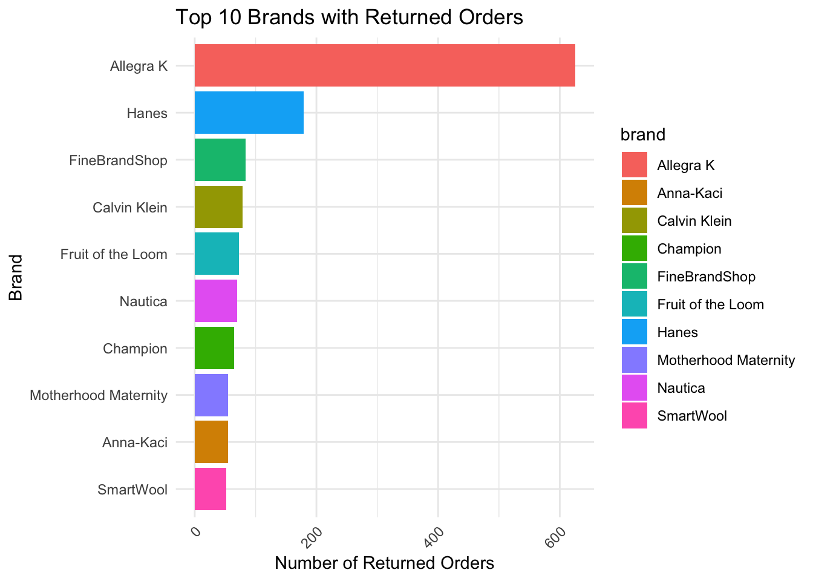

# Join orders with order_items to see details of each orderorders_with_items <- orders %>%left_join(order_items, by ="order_id") %>%select(order_id, user_id.x, status.x, created_at.x, product_id, sale_price)# View sample of joined datahead(orders_with_items)
order_id user_id.x status.x created_at.x product_id
1 25 22 Cancelled 2024-11-19 09:38:00.000000 UTC NA
2 63 47 Cancelled 2023-08-29 16:14:00.000000 UTC NA
3 102 79 Cancelled 2025-03-11 18:16:12.838990 UTC 7084
4 103 80 Cancelled 2022-09-25 00:13:00.000000 UTC 14021
5 103 80 Cancelled 2022-09-25 00:13:00.000000 UTC 10876
6 106 83 Cancelled 2023-07-16 18:56:00.000000 UTC NA
sale_price
1 NA
2 NA
3 18.00
4 9.96
5 20.00
6 NA
# Join orders with users to analyze customer behaviororders_with_users <- orders %>%left_join(users, by =c("user_id"="id")) %>%select(order_id, user_id, status, created_at.x, gender.x, age, state) %>%rename(created_at = created_at.x, gender = gender.x) # Rename to avoid ambiguity# View sample of joined datahead(orders_with_users)
order_id user_id status created_at gender age state
1 25 22 Cancelled 2024-11-19 09:38:00.000000 UTC F NA <NA>
2 63 47 Cancelled 2023-08-29 16:14:00.000000 UTC F 26 Bayern
3 102 79 Cancelled 2025-03-11 18:16:12.838990 UTC F 22 Fujian
4 103 80 Cancelled 2022-09-25 00:13:00.000000 UTC F NA <NA>
5 106 83 Cancelled 2023-07-16 18:56:00.000000 UTC F NA <NA>
6 117 88 Cancelled 2022-06-22 15:12:00.000000 UTC F 34 Arkansas
Average number of orders made by different age groups.
# Add age group columnorders_per_user_age <- orders_with_users %>%mutate(age_group =case_when( age <18~"Under 18", age >=18& age <25~"18-24", age >=25& age <35~"25-34", age >=35& age <45~"35-44", age >=45& age <55~"45-54", age >=55~"55+",TRUE~"Unknown" )) %>%group_by(user_id, age_group) %>%summarise(num_orders =n(), .groups ="drop")ggplot(orders_per_user_age, aes(x = num_orders, fill = age_group)) +geom_histogram(binwidth =1, color ="black", alpha =0.7, position ="identity") +labs(title ="Distribution of Orders by Age Group", x ="Number of Orders", y ="Count") +theme_minimal() +theme(legend.position ="top")
Sales by distribution center
# Aggregate sales by distribution centersales_by_dc <- order_items %>%left_join(inventory_items, by =c("inventory_item_id"="id")) %>%left_join(distribution_centers, by =c("product_distribution_center_id"="id")) %>%group_by(name) %>%#filter(!is.na(name)) %>% summarise(total_sales =sum(sale_price, na.rm =TRUE), .groups ="drop") %>%mutate(name =ifelse(name =="Port Authority of New York/New Jersey NY/NJ", "Port Authority of NY/NJ", name))# Plotggplot(sales_by_dc, aes(x =reorder(name, total_sales), y = total_sales)) +geom_bar(stat ="identity", fill ="red") +coord_flip() +labs(title ="Total Sales by Distribution Center",x ="Distribution Center",y ="Total Sales ($)") +theme_minimal()
unique(sales_by_dc$name)
[1] "Charleston SC" "Chicago IL"
[3] "Houston TX" "Los Angeles CA"
[5] "Memphis TN" "Mobile AL"
[7] "New Orleans LA" "Philadelphia PA"
[9] "Port Authority of NY/NJ" "Savannah GA"
[11] NA
Sales contribution
# Identify Top 10 Brands by Total Salestop_brands <- order_items %>%left_join(products, by =c("product_id"="id")) %>%group_by(brand) %>%summarise(total_sales =sum(sale_price, na.rm =TRUE), .groups ="drop") %>%arrange(desc(total_sales)) %>%head(10)# Aggregate Sales by Distribution Center and Brandsales_by_dc <- order_items %>%left_join(products, by =c("product_id"="id")) %>%left_join(inventory_items, by =c("inventory_item_id"="id")) %>%left_join(distribution_centers, by =c("product_distribution_center_id"="id")) %>%filter(`product_brand`%in% top_brands$brand) %>%group_by(`product_brand`, `name.y`) %>%# Correct column references: product_brand and name.ysummarise(total_sales =sum(sale_price, na.rm =TRUE), .groups ="drop") %>%arrange(`product_brand`, desc(total_sales))# Stacked Bar Chart by Distribution Centerggplot(sales_by_dc, aes(x =reorder(`name.y`, total_sales), y = total_sales, fill =`product_brand`)) +geom_bar(stat ="identity", position ="stack") +# Stack bars for each distribution centercoord_flip() +labs(title ="Sales Contribution by Distribution Center for Top 10 Brands",x ="Distribution Center",y ="Total Sales ($)") +theme_minimal() +theme(axis.text.x =element_text(angle =45, hjust =1), # Rotate X-axis labels for better visibilityaxis.title =element_text(size =12),plot.title =element_text(hjust =0.5, size =14, face ="bold") )
Liked brands in both genders.
# Aggregate sales by gender and brandsales_by_gender_brand <- order_items %>%left_join(products, by =c("product_id"="id")) %>%left_join(orders, by =c("order_id"="order_id")) %>%group_by(gender, brand) %>%# Grouping by gender and brandsummarise(num_orders =sum(num_of_item, na.rm =TRUE), .groups ="drop") %>%# Sum of items soldarrange(gender, desc(num_orders))# View the aggregated datahead(sales_by_gender_brand)
# A tibble: 6 × 3
gender brand num_orders
<chr> <chr> <int>
1 F Allegra K 8617
2 F FineBrandShop 1540
3 F Hanes 1332
4 F Motherhood Maternity 1112
5 F Anna-Kaci 1021
6 F HUE 890
top_5_brands_gender <- sales_by_gender_brand %>%group_by(gender) %>%top_n(5, num_orders) %>%ungroup()# Stacked Bar Chart for Top 5 Brands by Genderggplot(top_5_brands_gender, aes(x = gender, y = num_orders, fill = brand)) +geom_bar(stat ="identity", position ="stack") +labs(title ="Top 5 Most Liked Brands by Gender (Based on Number of Items Sold)",x ="Gender",y ="Number of Items Sold") +theme_minimal() +theme(axis.text.x =element_text(angle =45, hjust =1)) # Rotate x-axis labels for better readability
# Facet Grid for Top 5 Brands by Genderggplot(top_5_brands_gender, aes(x =reorder(brand, num_orders), y = num_orders, fill = brand)) +geom_bar(stat ="identity") +coord_flip() +# Flip axes for better readabilityfacet_wrap(~ gender, scales ="free_y") +# Separate plots for each genderlabs(title ="Top 5 Most Liked Brands by Gender (Based on Number of Items Sold)",x ="Brand",y ="Number of Items Sold") +theme_minimal() +theme(legend.position ="none", axis.text.x =element_text(angle =45, hjust =1))
Sales trend
# # Aggregate sales by quarter# sales_by_quarter <- order_items %>%# mutate(# create_at = ymd_hms(created_at)) %>% # #quarter = quarter(created_at)) %>%# group_by(quarter) %>%# summarise(total_sales = sum(sale_price, na.rm = TRUE), .groups = "drop")# # # Inspect the class of 'quarter'# print("Class of 'quarter' column:")# print(class(sales_by_quarter$quarter))# # # Create a plot for total sales by quarter# ggplot(sales_by_quarter, aes(x = quarter, y = total_sales)) +# geom_line(color = "blue") +# geom_point() +# scale_x_date(date_breaks = "3 months", date_labels = "%b %Y") + # Adjust date labels for quarters# labs(title = "Total Sales Over Time (Quarterly)", x = "Quarter", y = "Total Sales ($)") +# theme_minimal() +# theme(axis.text.x = element_text(angle = 45, hjust = 1)) # Rotate x-axis labels for better readability#
Profits earned by brands.
# Calculate profit for each product and brandprofit_margins <- order_items %>%left_join(products, by =c("product_id"="id")) %>%group_by(product_id, brand, cost, retail_price) %>%summarise(total_sale_price =sum(sale_price, na.rm =TRUE),total_items_sold =n(), .groups ="drop") %>%mutate(total_cost = total_items_sold * cost,profit = total_sale_price - total_cost,profit_margin = (profit / total_sale_price) *100) %>%arrange(desc(profit)) # Order by highest profit# 1. Bar Plot: Top Brands by Profittop_brands_by_profit <- profit_margins %>%group_by(brand) %>%summarise(total_profit =sum(profit), .groups ="drop") %>%top_n(10, total_profit) # Get top 10 brands with highest profitggplot(top_brands_by_profit, aes(x =reorder(brand, total_profit), y = total_profit, fill = brand)) +geom_bar(stat ="identity") +coord_flip() +labs(title ="Top 10 Brands by Total Profit",x ="Brand",y ="Total Profit ($)") +theme_minimal() +theme(legend.position ="none")
# 2. Bar Plot: Profit Margin by Brandprofit_margin_by_brand <- profit_margins %>%group_by(brand) %>%summarise(avg_profit_margin =mean(profit_margin), .groups ="drop") %>%top_n(10, avg_profit_margin)ggplot(profit_margin_by_brand, aes(x =reorder(brand, avg_profit_margin), y = avg_profit_margin, fill = brand)) +geom_bar(stat ="identity") +coord_flip() +labs(title ="Average Profit Margin by Brand",x ="Brand",y ="Average Profit Margin (%)") +theme_minimal() +theme(legend.position ="none")
# 3. Bar Plot: Total Sales vs. Profit by Brandtotal_sales_profit_by_brand <- profit_margins %>%group_by(brand) %>%summarise(total_sales =sum(total_sale_price), total_profit =sum(profit), .groups ="drop") %>%top_n(10, total_profit)ggplot(total_sales_profit_by_brand, aes(x =reorder(brand, total_profit))) +geom_bar(aes(y = total_sales, fill ="Sales"), stat ="identity", position ="dodge") +geom_bar(aes(y = total_profit, fill ="Profit"), stat ="identity", position ="dodge") +labs(title ="Total Sales vs. Profit by Brand",x ="Brand",y ="Amount ($)") +scale_fill_manual(values =c("Sales"="skyblue", "Profit"="orange")) +theme_minimal() +theme(legend.position ="bottom")
Overall conversion rate from data.
# # Check the columns in the events table# str(events)# # # Check the columns in the orders table# str(orders)# # # Assuming the events table has an 'id' column, proceed with the join# event_order_link <- events %>%# filter(event_type == "purchase") %>%# left_join(orders, by = "user_id") %>%# filter(created_at.x >= created_at.y - days(1) & created_at.x <= created_at.y + days(1)) %>%# select(event_id = id, order_id, user_id, event_time = created_at.x, order_time = created_at.y, status)# # # Check the structure of the resulting dataframe# str(event_order_link)# # # Summarize the conversion data# conversion_summary <- event_order_link %>%# summarise(total_events = n(),# converted_orders = sum(status %in% c("Shipped", "Complete"), na.rm = TRUE),# conversion_rate = converted_orders / total_events * 100)# # # View the results# head(event_order_link)# conversion_summary
Brands that sell the most in given states.
# # Aggregate sales by state, brand, and product, then filter top 10 brands and states# top_brands_state_heatmap <- order_items %>%# left_join(products, by = c("product_id" = "id")) %>%# left_join(users, by = c("user_id" = "id")) %>%# group_by(state, brand) %>%# summarise(total_sales = sum(sale_price, na.rm = TRUE), .groups = "drop") %>%# filter(state %in% top_states_by_sales$state) %>%# group_by(state) %>%# top_n(10, total_sales) %>% # Get top 10 brands per state# ungroup()# # # Plot: Heatmap of Top 10 Brands by Sales in Top 10 States# ggplot(top_brands_state_heatmap, aes(x = state, y = reorder(brand, total_sales), fill = total_sales)) +# geom_tile() +# labs(title = "Heatmap of Top 10 Brands by Sales in Top 10 States",# x = "State",# y = "Brand",# fill = "Total Sales ($)") +# theme_minimal() +# theme(axis.text.x = element_text(angle = 45, hjust = 1))
Dominating Product categories in different states.
# # Aggregate sales by state, category, and brand# top_categories_by_state_brand <- order_items %>%# left_join(products, by = c("product_id" = "id")) %>%# left_join(users, by = c("user_id" = "id")) %>%# group_by(state, category, brand) %>%# summarise(total_sales = sum(sale_price, na.rm = TRUE), .groups = "drop") %>%# filter(state %in% top_states_by_sales$state) %>%# group_by(state) %>%# top_n(10, total_sales) %>% # Get top 10 brands per state# ungroup()# # # Plot: Top 10 Brands by Product Category and State# ggplot(top_categories_by_state_brand, aes(x = reorder(state, total_sales), y = total_sales, fill = category)) +# geom_bar(stat = "identity", position = "dodge") +# coord_flip() +# labs(# title = "Top 10 Product Categories and State",# x = "State",# y = "Total Sales ($)",# fill = "Product Category"# ) +# theme_minimal() +# theme(# axis.text.x = element_text(angle = 45, hjust = 1),# legend.position = "bottom", # Place the legend at the bottom for clarity# plot.title = element_text(size = 14, face = "bold"), # Make the title larger for emphasis# axis.title = element_text(size = 12) # Make axis titles slightly larger# )
Shopping choices among genders.
# Aggregate sales by gender and product (using 'name' for product name)top_products_by_gender <- order_items %>%left_join(products, by =c("product_id"="id")) %>%left_join(orders, by =c("order_id"="order_id")) %>%group_by(gender, name) %>%# 'name' represents the product namesummarise(total_sales =sum(sale_price, na.rm =TRUE), .groups ="drop") %>%arrange(gender, desc(total_sales)) %>%group_by(gender) %>%slice_head(n =5) # Get the top 5 products for each gender# Plot: Bar graph with top 5 products by genderggplot(top_products_by_gender, aes(x =reorder(name, total_sales), y = total_sales, fill = gender)) +geom_bar(stat ="identity") +facet_wrap(~gender) +# Separate the bars for each gender in a facetcoord_flip() +# Flip the axes for better readabilitylabs(title ="Top 5 Products Bought by Each Gender",x ="Product",y ="Total Sales ($)") +theme_minimal() +theme(legend.position ="none", axis.text.x =element_text(angle =45, hjust =1))
States where returning is most common
# Analyzing top 10 returned orders by statereturned_orders_by_state <- orders %>%filter(status =="Returned") %>%left_join(users, by =c("user_id"="id")) %>%group_by(state) %>%summarise(num_returns =n(), .groups ="drop") %>%arrange(desc(num_returns)) %>%slice_head(n =10) # Get top 10 states# Plot the top 10 returned orders by stateggplot(returned_orders_by_state, aes(x =reorder(state, num_returns), y = num_returns, fill = state)) +geom_bar(stat ="identity") +coord_flip() +labs(title ="Top 10 States with Returned Orders",x ="State",y ="Number of Returned Orders") +theme_minimal() +theme(axis.text.x =element_text(angle =45, hjust =1))
Brands known for returned orders
# Analyzing top 10 returned orders by brandreturned_orders_by_brand <- order_items %>%filter(status =="Returned") %>%left_join(products, by =c("product_id"="id")) %>%group_by(brand) %>%summarise(num_returns =n(), .groups ="drop") %>%arrange(desc(num_returns)) %>%slice_head(n =10) # Get top 10 brands# Plot the top 10 returned orders by brandggplot(returned_orders_by_brand, aes(x =reorder(brand, num_returns), y = num_returns, fill = brand)) +geom_bar(stat ="identity") +coord_flip() +labs(title ="Top 10 Brands with Returned Orders",x ="Brand",y ="Number of Returned Orders") +theme_minimal() +theme(axis.text.x =element_text(angle =45, hjust =1))

Which age group tends to return more often
# Analyzing top 10 returned orders by age groupreturned_orders_by_age <- orders %>%filter(status =="Returned") %>%left_join(users, by =c("user_id"="id")) %>%mutate(age_group =case_when( age <18~"Under 18", age >=18& age <25~"18-24", age >=25& age <35~"25-34", age >=35& age <45~"35-44", age >=45& age <55~"45-54", age >=55~"55+",TRUE~"Unknown" )) %>%group_by(age_group) %>%summarise(num_returns =n(), .groups ="drop") %>%arrange(desc(num_returns)) %>%slice_head(n =10) # Get top 10 age groups# Plot the top 10 returned orders by age groupggplot(returned_orders_by_age, aes(x =reorder(age_group, num_returns), y = num_returns, fill = age_group)) +geom_bar(stat ="identity") +labs(title ="Top 10 Age Groups with Returned Orders",x ="Age Group",y ="Number of Returned Orders") +theme_minimal() +theme(axis.text.x =element_text(angle =45, hjust =1))
Sales generated by categories of product
sales_by_category <- order_items %>%left_join(products, by =c("product_id"="id")) %>%group_by(category) %>%summarise(total_sales =sum(sale_price, na.rm =TRUE), .groups ="drop") %>%arrange(desc(total_sales))# Plotggplot(head(sales_by_category, 10), aes(x =reorder(category, total_sales), y = total_sales)) +geom_bar(stat ="identity", fill ="steelblue") +coord_flip() +labs(title ="Top 10 Product Categories by Total Sales",x ="Product Category",y ="Total Sales ($)") +theme_minimal()
Average Order value
# Calculate average order value by stateaov_by_state <- orders_with_users %>%left_join(order_items, by ="order_id") %>%group_by(state) %>%summarise(avg_order_value =mean(sale_price, na.rm =TRUE), .groups ="drop") %>%arrange(desc(avg_order_value))# Plotggplot(head(aov_by_state, 10), aes(x =reorder(state, avg_order_value), y = avg_order_value)) +geom_bar(stat ="identity", fill ="orange") +coord_flip() +labs(title ="Top 10 States by Average Order Value",x ="State",y ="Average Order Value ($)") +theme_minimal()
# Plot age distributionggplot(users, aes(x = age)) +geom_histogram(binwidth =5, fill ="purple", color ="black") +labs(title ="Customer Age Distribution",x ="Age",y ="Count") +theme_minimal()
Sales generate by each product
# Aggregate sales by producttop_products <- order_items %>%left_join(products, by =c("product_id"="id")) %>%group_by(product_id, name) %>%summarise(total_sales =sum(sale_price, na.rm =TRUE), .groups ="drop") %>%arrange(desc(total_sales))# Plotggplot(head(top_products, 10), aes(x =reorder(name, total_sales), y = total_sales)) +geom_bar(stat ="identity", fill ="steelblue") +coord_flip() +labs(title ="",x ="Product Name",y ="Total Sales ($)") +theme_minimal()
Cost vs Retail Price
# Scatter plot of cost vs. retail priceggplot(products, aes(x = cost, y = retail_price)) +geom_point(alpha =0.5, color ="darkgreen") +geom_smooth(method ="lm", color ="red") +labs(title ="Correlation Between Product Cost and Retail Price",x ="Cost ($)",y ="Retail Price ($)") +theme_minimal()
`geom_smooth()` using formula = 'y ~ x'
Conversion rates of brands
# Get top-selling brandstop_brands <- orders_with_users %>%left_join(order_items, by ="order_id") %>%left_join(products, by =c("product_id"="id")) %>%group_by(brand) %>%summarise(total_sales =sum(sale_price, na.rm =TRUE), .groups ="drop") %>%arrange(desc(total_sales)) %>%slice_head(n =10) # Top 10 brands by sales# Calculate conversion rate for top brandstop_brand_conversion <- events %>%filter(event_type =="purchase") %>%left_join(order_items, by =c("id"="order_id")) %>%left_join(products, by =c("product_id"="id")) %>%filter(brand %in% top_brands$brand) %>%group_by(brand) %>%summarise(total_events =n(),converted_orders =sum(!is.na(status) & status %in%c("Shipped", "Delivered")),conversion_rate = (converted_orders / total_events) *100,.groups ="drop") %>%arrange(desc(conversion_rate))# Plot conversion rates for top-selling brandsggplot(top_brand_conversion, aes(x =reorder(brand, conversion_rate), y = conversion_rate)) +geom_bar(stat ="identity", fill ="steelblue") +coord_flip() +labs(title ="Conversion Rate for Top-Selling Brands",x ="Brand",y ="Conversion Rate (%)") +theme_minimal()
Brands and their area wise performance
# Step 1: Identify Top 10 Brands by Total Salestop_brands <- order_items %>%left_join(products, by =c("product_id"="id")) %>%group_by(brand) %>%summarise(total_sales =sum(sale_price, na.rm =TRUE), .groups ="drop") %>%arrange(desc(total_sales)) %>%head(10)# Step 2: Get Sales by State for Top 10 Brandssales_by_state_top_brands <- order_items %>%left_join(products, by =c("product_id"="id")) %>%left_join(users, by =c("user_id"="id")) %>%filter(brand %in% top_brands$brand) %>%group_by(state, brand) %>%summarise(total_sales =sum(sale_price, na.rm =TRUE), .groups ="drop") %>%arrange(brand, desc(total_sales))# ✅ Keep top 5 states for each brandtop_states_per_brand <- sales_by_state_top_brands %>%group_by(brand) %>%slice_max(total_sales, n =5) %>%ungroup()# Step 3: Plot using facets for better clarityggplot(top_states_per_brand, aes(x =reorder(state, total_sales), y = total_sales, fill = state)) +geom_bar(stat ="identity") +coord_flip() +facet_wrap(~ brand, scales ="free_y") +# Facet by brandlabs(title ="Top 10 Brands and Their Top 5 States by Performance",x ="State",y ="Total Sales ($)") +theme_minimal() +theme(axis.text.x =element_text(angle =45, hjust =1), # Rotate labelslegend.position ="none") # Remove legend to reduce clutter
Returns from different traffic sources
## # Plot the traffic sources by conversion rate# ggplot(conversion_by_traffic, aes(x = reorder(traffic_source, conversion_rate), y = conversion_rate, fill = traffic_source)) +# geom_bar(stat = "identity") +# labs(title = "Conversion Rate by Traffic Source",# x = "Traffic Source",# y = "Conversion Rate (%)") +# theme_minimal() +# theme(axis.text.x = element_text(angle = 45, hjust = 1))# # # Plot the traffic sources by total sales# ggplot(conversion_by_traffic, aes(x = reorder(traffic_source, total_sales), y = total_sales, fill = traffic_source)) +# geom_bar(stat = "identity") +# labs(title = "Total Sales by Traffic Source",# x = "Traffic Source",# y = "Total Sales ($)") +# theme_minimal() +# theme(axis.text.x = element_text(angle = 45, hjust = 1))# # # Plot the traffic sources by total profit# ggplot(conversion_by_traffic, aes(x = reorder(traffic_source, total_profit), y = total_profit, fill = traffic_source)) +# geom_bar(stat = "identity") +# labs(title = "Total Profit by Traffic Source",# x = "Traffic Source",# y = "Total Profit ($)") +# theme_minimal() +# theme(axis.text.x = element_text(angle = 45, hjust = 1))